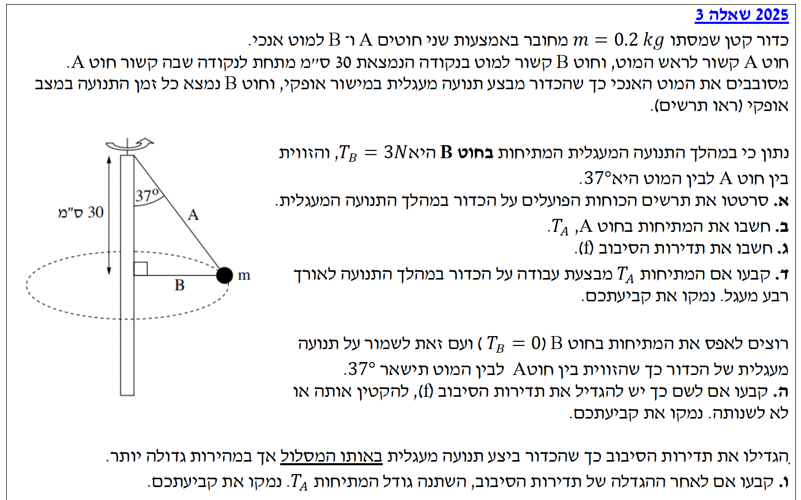

פתרון בגרות בפיזיקה
מכניקה 2025 שאלה 3
שלום תלמידים יקרים! ניגש יחד לפתרון השאלה העוסקת בתנועה מעגלית. נקפיד על עבודה מסודרת, המרת יחידות ותרשימי כוחות.
עודכן:
--- --:--:--

[תמונת השאלה המקורית]
לא נמצאה תמונה בשם question-image.png באותה תיקייה.
מה נתון:
- מסת הכדור: \( m = 0.2 \text{ kg} \).
- המרחק האנכי בין חיבורי החוטים למטה: נקרא לו \( h \). הנתון הוא 30 ס"מ. המרת יחידות: \( h = 30 \text{ cm} = 0.3 \text{ m} \).
- הזווית בין חוט A למוט האנכי: \( \theta = 37^\circ \).
- מתיחות בחוט B: \( T_B = 3 \text{ N} \). אופקי לחלוטין.
מה מחפשים:
לשרטט תרשים כוחות (FBD) הפועלים על הכדור במהלך התנועה המעגלית האופקית.
עקרונות בשימוש:
נזהה את כל הגופים הנוגעים בכדור (2 חוטים) וכוח הכבידה הפועל מרחוק. נציב מערכת צירים הנוחה לתנועה מעגלית: ציר \( r \) רדיאלי (לכיוון מרכז המעגל), וציר \( y \) אנכי.
פתרון צעד-אחר-צעד:
הכוחות הפועלים הם: כוח הכבידה כלפי מטה, מתיחות \( T_B \) אופקית שמאלה, ומתיחות \( T_A \) לאורך החוט A בזווית של \( 37^\circ \) ביחס לאנך. הכוחות משורטטים מנקודת עוגן מרכזית בתוך הגוף כדי למנוע חפיפה, ושם הגוף מופרד בתחתית.
מסקנה: השרטוט שורטט בהתאם לכוחות ולזווית.
טיפ מורה:
תרשים כוחות חופשי הוא הבסיס לכל פתרון במכניקה. שימו לב שבחרנו את הכיוון החיובי של ציר \( r \) לכיוון מרכז המעגל. אנו עושים זאת מכיוון שזהו כיוונה של התאוצה הרדיאלית (הצנטריפטלית), וכך נוכל לבנות בהמשך את משוואת החוק השני של ניוטון עבור התנועה המעגלית בצורה נכונה ונוחה!
מה נתון:
המסה \( m = 0.2 \text{ kg} \), זווית החוט A ביחס לאנך \( \theta = 37^\circ \). תאוצת הכובד: \( g = 10 \text{ m/s}^2 \).
מה מחפשים:
את גודל המתיחות בחוט \( T_A \).
נוסחאות מהדף:
\( \Sigma\vec{F} = m\vec{a} \)
\( F = mg \)
חישוב:
על פי החוק השני של ניוטון, נרשום את משוואת הכוחות בציר \( y \). הרכיב האנכי של חוט A פועל כלפי מעלה (חיובי) וכוח הכבידה פועל כלפי מטה (שלילי). חוט B לא משפיע על הציר האנכי כיוון שהוא אופקי לחלוטין. מכיוון שאין תנועה בציר האנכי, התאוצה בו אפס (\( a_y = 0 \)).
\[ \Sigma F_y = T_A \cos(37^\circ) - m \cdot g = 0 \]
\[ T_A \cos(37^\circ) = m \cdot g \]
נציב את הנתונים הידועים לנו:
\[ T_A \cdot \cos(37^\circ) = 0.2 \cdot 10 \]
\[ T_A \cdot 0.8 = 2 \]
\[ T_A = \frac{2}{0.8} = 2.50 \text{ N} \]
המתיחות בחוט A היא: \( T_A = 2.50 \text{ N} \)
טיפ מורה:
תלמידים יקרים, שימו לב לחלוקת התפקידים! חוט A לבדו "סוחב" את משקלו של הכדור כי חוט B אופקי ולא מסוגל לעזור נגד כוח הכובד. תמיד כדאי להתחיל מהציר שבו יש תאוצה אפס, זה לרוב נותן לנו נעלם חשוב שמקדם אותנו לפתרון.
מה נתון:
מתיחות בחוט B: \( T_B = 3 \text{ N} \). מתיחות בחוט A: \( T_A = 2.50 \text{ N} \). המרחק \( h = 0.3 \text{ m} \) והזווית \( \theta = 37^\circ \).
מה מחפשים:
את תדירות הסיבוב של הכדור \( f \).
נוסחאות מהדף:
\( \Sigma\vec{F} = m\vec{a} \)
\( a_R = \omega^2 r \)
\( \omega = 2\pi f \)
חישוב צעד-אחר-צעד:
שלב 1: מציאת רדיוס הסיבוב
נסתכל על המשולש ישר הזווית. הניצב האנכי הוא \( h = 0.3 \text{ m} \) והניצב האופקי הוא \( r \).
\[ \tan(37^\circ) = \frac{r}{h} = \frac{r}{0.3} \]
\[ r = 0.3 \cdot \tan(37^\circ) = 0.3 \cdot 0.75 = 0.225 \text{ m} \]
שלב 2: משוואת כוחות בציר r
על פי החוק השני של ניוטון, נרשום את משוואת הכוחות הרדיאלית. מתוך הנוסחאות בדף, נציב ונקבל את ביטוי התאוצה הרדיאלית: \( a_R = \omega^2 r = (2\pi f)^2 r = 4\pi^2 f^2 r \):
\[ \Sigma F_r = T_A \sin(37^\circ) + T_B = m \cdot a_R \]
\[ T_A \sin(37^\circ) + T_B = m \cdot (4\pi^2 f^2 r) \]
\[ 2.5 \cdot \sin(37^\circ) + 3 = 0.2 \cdot 4 \cdot \pi^2 \cdot f^2 \cdot 0.225 \]
\[ 2.5 \cdot 0.6 + 3 = 0.18 \cdot \pi^2 \cdot f^2 \]
\[ 4.5 = 1.776 \cdot f^2 \]
\[ f^2 = \frac{4.5}{1.776} \approx 2.533 \implies f = \sqrt{2.533} = 1.59 \text{ Hz} \]
תדירות הסיבוב היא: \( f = 1.59 \text{ Hz} \)
טיפ מורה:
לפני שקופצים למשוואות הדינמיקה, חשוב מאוד לעשות "הפסקת גיאומטריה" כדי למצוא את רדיוס הסיבוב \( r \). שגיאה נפוצה היא להציב את הנתון 30 ס"מ כרדיוס! זיכרו שהרדיוס הוא תמיד המרחק ממרכז המעגל עד לגוף הנע.
מה נתון:
הכדור מבצע תנועה מעגלית אופקית (מהירותו תמיד משיקה למסלול המעגלי). כוח המתיחות \( T_A \) פועל לאורך חוט A הנמצא במישור האנכי-רדיאלי (המישור הנפרש על ידי המוט והחוט).
מה מחפשים:
לקבוע ולנמק האם המתיחות \( T_A \) מבצעת עבודה על הכדור במהלך רבע מעגל.
נוסחאות מהדף:
\( W = F_x \Delta x = F \cos\theta \Delta s \)
נימוק צעד-אחר-צעד:
נדמיין את המערכת ברגע המוצג בשרטוט: הכדור נמצא בצד ימין, ולכן כיוון המהירות שלו (כיוון התנועה) מאונך למישור הדף ופונה לתוכו. לעומת זאת, חוט A המפעיל את המתיחות מונח כולו על פני מישור הדף יחד עם המוט המרכזי.
מכיוון שכיוון התנועה מאונך למישור הדף, הוא בהכרח מאונך לכל קו שעליו, ובפרט לחוט A. לכן, הזווית בין המתיחות \( T_A \) לבין כיוון המהירות היא בדיוק \( 90^\circ \).
\[ \cos(90^\circ) = 0 \implies W_{T_A} = 0 \]
מסקנה: המתיחות \( T_A \) לא מבצעת עבודה (העבודה שווה לאפס).
טיפ מורה:
זהו כלל אצבע חשוב מאוד! בתנועה מעגלית, כל כוח שכיוונו נמצא במישור הרדיאלי-אנכי (כלומר כוח שפועל אל המרכז, החוצה מהמרכז, או אנכית במקביל לציר הסיבוב) - יהיה מאונך למהירות המשיקית ולכן לא יבצע עבודה! כוחות אלו משנים רק את כיוון התנועה ולא את גודל המהירות. התבוננו בהדמיה וראו בעצמכם כיצד הזווית הכתומה היא בדיוק 90 מעלות, מכל כיוון שתסתכלו עליה!
מה נתון:
המתיחות בחוט B מתאפסת: \( T_B = 0 \). הגיאומטריה נשארת זהה: הזווית נשארת \( 37^\circ \) והרדיוס \( r = 0.225 \text{ m} \).
מה מחפשים:
לקבוע האם צריך להגדיל, להקטין או לא לשנות את תדירות הסיבוב \( f \) כדי להגיע למצב החדש.
ניתוח צעד-אחר-צעד:
שלב 1: בדיקת המתיחות בחוט A
משוואת הכוחות בציר האנכי היא \( \Sigma F_y = T_A \cos(37^\circ) - mg = 0 \). מכיוון שהמסה \( m \), תאוצת הכובד \( g \) והזווית לא השתנו, המשוואה נשארת זהה לחלוטין ולכן המתיחות \( T_A \) נשארת קבועה בערכה המקורי (\( 2.50 \text{ N} \)).
שלב 2: חילוץ התדירות ממשוואת ציר r
נרשום את משוואת הכוחות הרדיאלית הכוללת כפי שעשינו בסעיפים הקודמים, ונחלץ ממנה באופן אלגברי את התדירות \( f \):
\[ \Sigma F_r = T_A \sin(37^\circ) + T_B = m \cdot 4\pi^2 f^2 r \]
\[ f^2 = \frac{T_A \sin(37^\circ) + T_B}{m \cdot 4\pi^2 \cdot r} \]
\[ f = \sqrt{\frac{T_A \sin(37^\circ) + T_B}{m \cdot 4\pi^2 \cdot r}} \]
שלב 3: ניתוח מתמטי ופיזיקלי של התוצאה
כעת נבחן אילו גדלים השתנו ואילו נשארו קבועים בנוסחה שחילצנו:
- המכנה: המסה \( m \) ורדיוס הסיבוב \( r \) נשארו קבועים (נתון שהזווית נשמרה ולכן המסלול הגיאומטרי נותר זהה). לכן כל המכנה קבוע.
- המונה: הרכיב האופקי של חוט A, כלומר \( T_A \sin(37^\circ) \), קבוע כי מצאנו בשלב 1 ש-\( T_A \) קבוע. לעומת זאת, המתיחות \( T_B \) התאפסה (ירדה מ-\( 3 \text{ N} \) ל-\( 0 \text{ N} \)). לכן, המונה כולו קטן.
מכיוון שהמונה קטן (הכוח הרדיאלי הכולל הדוחף פנימה קטן) והמכנה נשאר קבוע, ערך השבר כולו קטן. מסקנה מתמטית ישירה: התדירות \( f \) חייבת לקטון.
מסקנה: יש להקטין את תדירות הסיבוב.
טיפ מורה:
בואו נבין את זה גם באופן אינטואיטיבי! ראינו שהמתיחות בחוט A נשארה בדיוק אותו הדבר, כי היא עדיין צריכה "לסחוב" את משקל הכדור נגד כוח הכובד. לעומת זאת, המתיחות בחוט B התאפסה לחלוטין ואין מי שיעזור למשוך את הכדור למרכז. המסקנה היא שסך הכוח הרדיאלי שמושך את הכדור פנימה – קטן! אם הכוח הרדיאלי קטן, אבל אנחנו עדיין דורשים שהכדור יישאר באותו מסלול גיאומטרי בדיוק, הוא חייב לנוע "רגוע" יותר. כלומר, התאוצה הרדיאלית הנדרשת קטנה יותר, מה שמחייב אותו להסתובב לאט יותר, ולכן בהכרח תדירות הסיבוב קטנה!
מה נתון:
מגדילים את תדירות הסיבוב. הכדור ממשיך לבצע תנועה מעגלית באותו מסלול בדיוק (אותו רדיוס ואותה זווית).
מה מחפשים:
לקבוע האם גודל המתיחות \( T_A \) השתנה בעקבות הגדלת התדירות, ולנמק.
נוסחאות מהדף:
\( \Sigma\vec{F} = m\vec{a} \)
הסבר:
ננתח את משמעות הנתון "אותו מסלול". הדבר מחייב שזווית החוט תישאר \( 37^\circ \) ושאין תאוצה אנכית. על פי משוואת החוק השני של ניוטון בציר האנכי (\( \Sigma F_y = T_A \cos(37^\circ) - mg = 0 \)), כוח הכבידה והזווית לא השתנו, ולכן הפתרון למשוואה נשאר זהה.
מסקנה: גודל המתיחות בחוט A לא השתנה.
טיפ מורה:
אז מה כן השתנה אם הגדלנו את התדירות? חוט B מתגייס! כדי לאפשר תאוצה רדיאלית גדולה יותר (ומכאן כוח רדיאלי שקול גדול יותר), המתיחות \( T_B \) תגדל משמעותית כדי לספק את הכוח הנוסף אל מרכז המעגל.